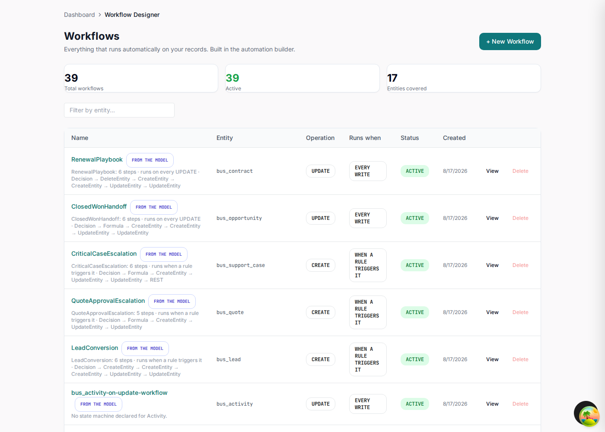
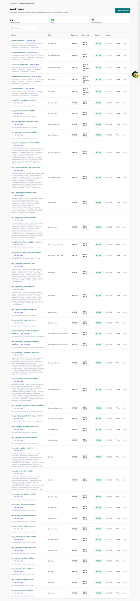
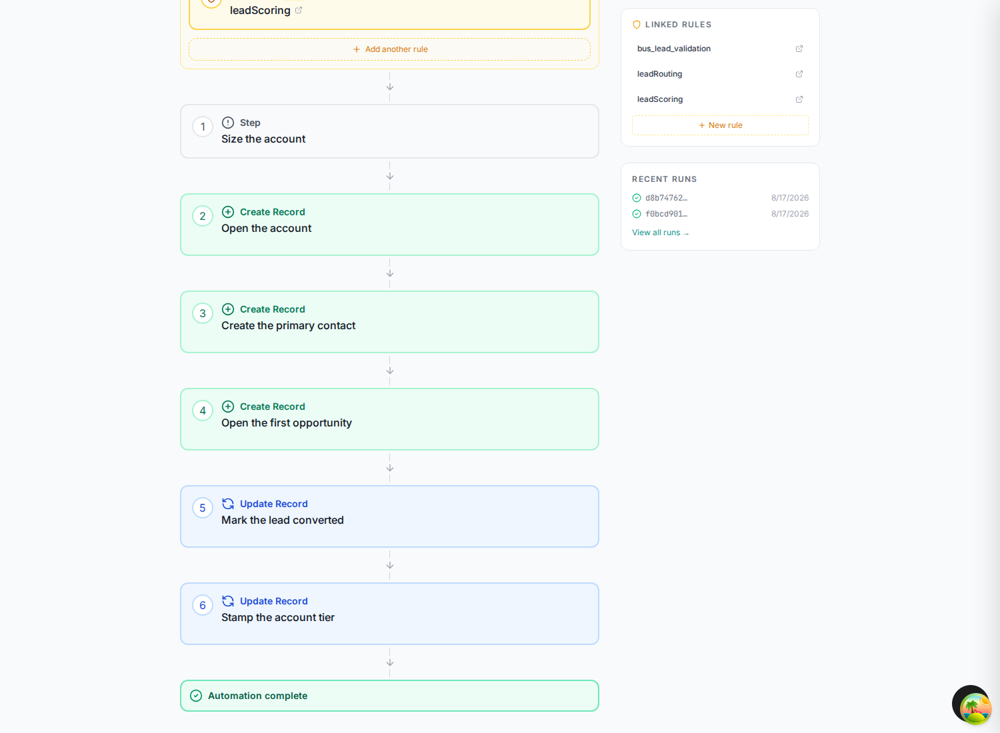

Workflows
Rules decide. Workflows do. EML has three kinds, and picking the right one is most of the work: a state machine for the lifecycle an object moves through, a hook workflow for side effects around a single write, and a saga for a process that touches several entities and carries values between steps.
| Kind | Drawn as | Reach for it when |
|---|---|---|
kind: state | stateDiagram-v2 | A record has a status with legal transitions and roles allowed to make them. |
kind: hook | flowchart + %%hook | Something must happen around a write to one entity: normalize, validate, notify, block. |
kind: saga | flowchart + %%step | One event should create or change records across several entities, in order. |
State machines
Each state is a value of the entity's status column; each transition is a change the application will allow. Everything else is refused.
%%meta name: Lead Lifecycle
%%meta kind: workflow
%%workflow LeadLifecycle entity: Lead kind: state
stateDiagram-v2
[*] --> new
new --> working : engage
working --> nurturing : nurture
nurturing --> working : re_engage
working --> qualified : qualify
qualified --> working : return_to_working
qualified --> converted : convert
working --> disqualified : disqualify
nurturing --> disqualified : disqualify
new --> disqualified : reject
converted --> [*]
disqualified --> [*]
%%rbac role:sales_rep|account_executive|sales_manager on Lead.update
%%rbac role:sales_manager|sales_ops on Lead.convert
%%rbac role:sales_manager on Lead.disqualify
%%trigger webhook:marketing -> ingestInboundLead on Lead
%%trigger cron:0 7 * * 1 -> recycleStaleLeads on Lead
There must be an initial transition ([*] --> x); every state must be reachable from it;
every state must have a path to a terminal. A state you can enter and never leave is almost always a
modelling slip, and it is invisible until a record is stuck in it.
%%rbac restricts a transition to roles. %%trigger declares what else can start
one: cron:, webhook: or message:. Both are renderer-safe comments,
so the diagram still draws as a plain state chart.
What the generator does with it
Each state machine becomes a workflow definition holding BPMN. On create the definition
puts the new record into the machine's starting state — the [*] --> new edge, written to
the entity's status column. On update it records a run without touching the
state: the transitions constrain what an update may do, they are not a licence to rewind it. The full
machine is stored in the definition's description, which is what the Workflow Designer displays.
Hook workflows
A flowchart of the process, plus %%hook directives binding named handlers to lifecycle
events. The chart is for the reader; the directives are what the generator compiles.
%%meta name: Contact Hygiene
%%meta kind: workflow
%%workflow ContactHygiene entity: Contact kind: hook
flowchart TD
A[Client Request] --> B[Validate Request]
B --> C[beforeCreate: normalizeEmail]
C --> D[customValidate: ensureUniqueEmail]
D --> E[Process Contact]
E --> F[afterCreate: enqueueWelcomeSequence]
F --> G[afterUpdate: syncToMarketingPlatform]
G --> H[beforeRead: enforceFieldLevelSecurity]
H --> I[afterRead: maskPersonalData]
I --> J[afterDelete: purgeMarketingConsent]
J --> K[Response]
%%hook beforeCreate normalizeEmail on Contact[field: email]
%%hook customValidate ensureUniqueEmail on Contact[field: email]
%%hook afterCreate enqueueWelcomeSequence on Contact
%%hook afterUpdate syncToMarketingPlatform on Contact[field: email_opt_out]
%%hook beforeRead enforceFieldLevelSecurity on Contact
%%hook afterRead maskPersonalData on Contact[field: phone, field: mobile]
%%hook afterDelete purgeMarketingConsent on ContactThe thirteen events
| Phase | Hooks | Signature |
|---|---|---|
| Create | beforeCreate, afterCreate |
before* receives the payload and returns it, changed or not.after* receives the record and returns nothing.beforeDelete receives the id; return false to block.customValidate receives the record; throw to reject.
|
| Update | beforeUpdate, afterUpdate | |
| Delete | beforeDelete, afterDelete | |
| Read | beforeRead, afterRead, beforeList, afterList, beforeQuery, afterQuery | |
| Any | customValidate |
Each directive generates a handler function in
backend/src/modules/hooks/handlers/<Entity>.ts. That file is written once
and never overwritten — the bodies are your application logic. Adding a hook to the model later
appends a new function; the registry that wires them up is rewritten every time. So: declare the hook
in the model, write the body in the generated project, regenerate freely.
This is also the honest answer to "where does the code I still have to write live?". A minted account number, a welcome email, a masked phone number: the model says that it happens and when; you say how.
Sagas: multi-step processes
A saga is a flowchart whose edges give the running order and whose nodes are bound to executable steps by
%%step. This is how one event reaches several tables.
%%workflow LeadConversion entity: Lead kind: saga trigger: rule
flowchart TD
A([Lead qualified]) --> B{Size the account}
B --> C[Open the account]
C --> D[Create the primary contact]
D --> E[Open the first opportunity]
E --> F[Mark the lead converted]
F --> G[Stamp the account tier]
G --> H([Converted])
%%step B Decision decisionTable: {"hitPolicy":"first","inputs":[{"id":"i1","field":"score"}],"outputs":[…],"rules":[…]}
%%step C CreateEntity entity: Account as: newAccountId fields: {"name":"company_name","tier":"accountTier",…}
%%step D CreateEntity entity: Contact as: newContactId fields: {"account_id":"newAccountId",…}
%%step E CreateEntity entity: Opportunity as: newOpportunityId fields: {"account_id":"newAccountId","contact_id":"newContactId",…}
%%step F UpdateEntity field: status value: converted
%%step G UpdateEntity entity: Account targetSource: newAccountId field: tier source: accountTierSteps share a context
This is the mechanism that makes a saga more than a list of writes. Every step can read the triggering record's columns plus anything an earlier step published:
CreateEntitypublishes the new row's id underas:.Formulapublishes its result undertarget:.Decisionpublishes one variable per output column of the row that matched.- A later step reads one by naming it in
source:ortargetSource:.
In the saga above, step B decides the tier, step C creates the account and binds its id as
newAccountId, step D wires the contact to that exact account, and step G reaches back into
the row step C created. Without the shared context a workflow could insert a row and never touch it
again.
The step types
| Type | Required | Does |
|---|---|---|
Decision | one of decisionTable / rule | Evaluates a table and publishes its outputs. rule: names a rule declared elsewhere instead of forking a copy of it. |
CreateEntity | entity, fields | Inserts a row, publishing its id under as. |
UpdateEntity | field + one of source/value | Writes one column, on the triggering record by default. |
DeleteEntity | — | Soft-deletes by default; hard: true removes the row. |
Formula | target, operation | multiply, divide, add, subtract, set, copy. |
REST | url | Calls an external endpoint; bodyTemplate interpolates context values. |
Row targeting. To touch another entity you must say which row: either
targetSource (a context key holding an id) or targetField (a foreign key
matched against the triggering row). Naming an entity with neither is refused rather than guessed —
updating the wrong row is bad, deleting it is worse.
URLs in a REST step. Properties split at whitespace before the next key:,
so url: https://… reads https as a property name and the step loses its url.
Write url:https://… with no space.
Two ways a saga starts
%%workflow LeadConversion entity: Lead kind: saga trigger: rule
%%workflow ClosedWonHandoff entity: Opportunity kind: saga trigger: automatic operation: UPDATE
trigger: rule runs only when a rule's trigger-workflow action names it, so the
rule's condition decides. trigger: automatic runs on every write matching
operation. Choose rule whenever the process should not fire on every save — an
automatic workflow "gated" on a condition would run regardless of it.
The workflows in the CRM


Open one
A list of definitions proves the model was read. Opening one proves it was understood. This is
LeadConversion — the saga written as a flowchart earlier in this chapter — as
the running application renders it.
![The LeadConversion workflow open in the editor. A black trigger card reads 'When a Lead record is CREATED · runs when triggered by a rule'. Below it a Rule Gates panel lists bus_lead_validation with nine conditions, leadRouting and leadScoring, each linking to its rule, with an Add another rule button. Then numbered steps: 1 Size the account, 2 Create Record — Open the account, 3 Create Record — Create the primary contact. A Details sidebar shows entity Lead, trigger operation CREATE, run mode Rule-gated, 6 steps, 3 rule gates and the created and updated dates; a Linked Rules panel lists the three rules with a New rule button; and a Recent Runs panel lists two successful runs.](img/30-crm-workflow-editor-leadconversion.png)
%%step and
%%rule directives; none of it was configured by hand after generation.

Add another rule, New rule and the step list are live. A definition marked from the model is owned by regeneration, so treat the model as the source of truth for anything you want to keep — but an operator can inspect, disable or extend a process without waiting for a release.